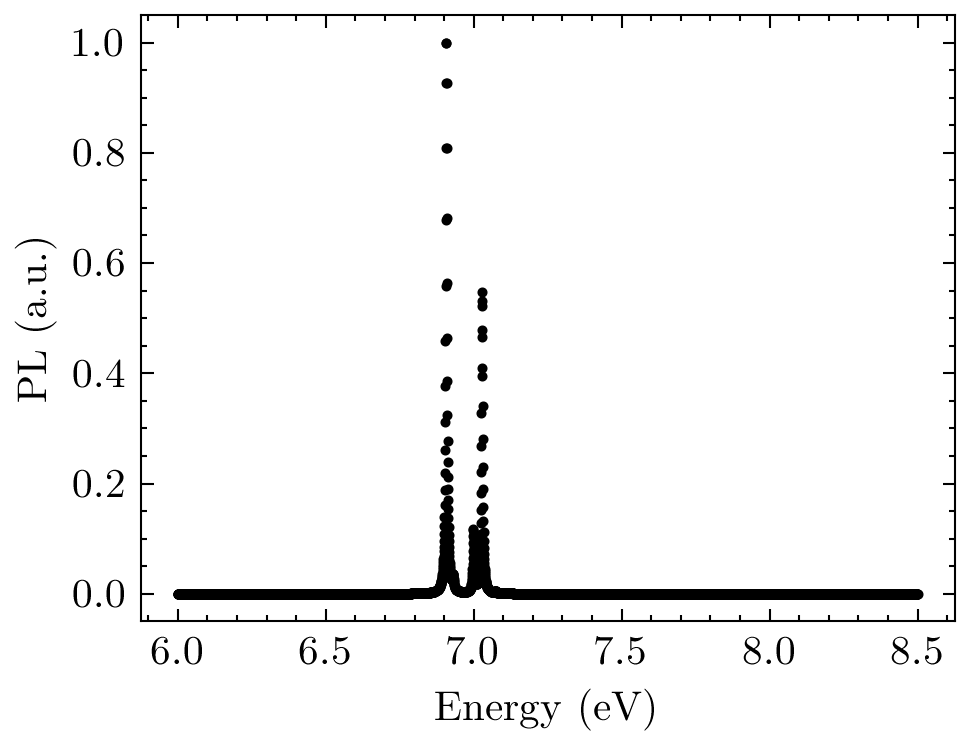

Exciton-Phonon Tutorial#
Exciton-phonon coupling refers to the interaction between excitons (bound states of an electron and a hole) and phonons (quanta of lattice vibrations) in a material. This coupling can significantly affect the optical and electronic properties of the material. When an exciton interacts with phonons, it can scatter, leading to changes in its energy and momentum. This process is crucial for understanding phenomena such as thermalization, relaxation, and recombination of excitons in semiconductors and other materials. This workflow is split up into several sections:
ELPH Compute the electron-phonon matrix elements $g_{kkp}$ using the LetzElPhC code.
MBPT Compute BSE kernel and diagonalize on top of GW calculation, using the Yambo code to get the exciton wavefunctions.
EXC-PH Combine all of the above to compute the exciton-phonon matrix elements that are used to compute photoluminesensce spectrum with python scripts.
We will go through these steps with a simple system of hBN monolayer that can be readily run with relatively small computational cost. Step 1 of calculating the phonons takes some time, but one can parallelize and calculate at the same time the GW-BSE kernel at step 3. For more detailed information on exciton-phonon coupling and its effects on luminescence in hexagonal boron nitride, you can refer to the paper: [Lechifflart et al., 2023].
NB: For a detailed tutorials on Quantum Espresso we refer to this Webpage
Step 0: DFT#
Run a self-consistent field (scf) calculation with
pw.x. We suggest creating a new directory calledmkdir scfin your ROOT FOLDER. Insidescfcreate a pw.x input filetouch scf.in
▶️ Expand for `scf` `pw.x` input file
&control
calculation = ‘scf’
outdir = ‘.’
prefix = ‘hBN’
pseudo_dir = ‘{PATH_TO_PSEUDOS}’ # Change me: We used pseudos from PseudoDojo SR_v0.5 LDA_Standard
verbosity = ‘high’
nstep = 20000
/&end
&system
ecutwfc = 120
ibrav = 0
nat = 4
ntyp = 2
occupations = ‘fixed’
force_symmorphic = .true.
/&end
&electrons
conv_thr = 1e-15
/&end
&IONS
/
&cell
cell_dynamics = “bfgs”
/
ATOMIC_SPECIES
B 10.811 B.upf
N 14.0067 N.upf
CELL_PARAMETERS (angstrom)
2.489045057 -0.000000000 0.000000000
-1.244522529 2.155576251 -0.000000000
0.000000000 -0.000000000 6.482867531
ATOMIC_POSITIONS (crystal)
B 0.6666666667 0.3333333333 0.5000000000
B 0.3333333333 0.6666666667 0.0000000000
N 0.6666666667 0.3333333333 -0.0000000000
N 0.3333333333 0.6666666667 0.5000000000
K_POINTS automatic
12 12 4 0 0 0
Run a non self-consistent field (nscf) calculation with
pw.x. Create a new directory in ROOT FOLDERmkdir nscf_6x6x1and link or copy theln -s ../scf/hBN.save ./folder tonscf. For the purpose of the tutorial we use a non-converged 6x6x1 grid (NB grid in the nscf has to be the same as the one used in DFPT):
▶️ Expand for `nscf` pw.x input file
&control
calculation = ‘nscf’
outdir = ‘.’
prefix = ‘hBN’
pseudo_dir = ‘{PATH_TO_PSEUDOS}’ # Change me: We used pseudos from PseudoDojo SR_v0.5 LDA_Standard
verbosity = ‘high’
nstep = 20000
/&end
&system
ecutwfc = 120
ibrav = 0
nat = 4
ntyp = 2
occupations = ‘fixed’
force_symmorphic = .true.
/&end
&electrons
conv_thr = 1e-15
/&end
&IONS
/
&cell
cell_dynamics = “bfgs”
/
ATOMIC_SPECIES
B 10.811 B.upf
N 14.0067 N.upf
CELL_PARAMETERS (angstrom)
2.489045057 -0.000000000 0.000000000
-1.244522529 2.155576251 -0.000000000
0.000000000 -0.000000000 6.482867531
ATOMIC_POSITIONS (crystal)
B 0.6666666667 0.3333333333 0.5000000000
B 0.3333333333 0.6666666667 0.0000000000
N 0.6666666667 0.3333333333 -0.0000000000
N 0.3333333333 0.6666666667 0.5000000000
K_POINTS automatic
12 12 1 0 0 0
Step 1: DFPT#
The goal of this step is to compute the electron-phonon matrix elements $g_{q\nu}(\mathbf{k}, i, j)$ defined as
$g_{\mathbf{q} \nu}(\mathbf{k}, i, j)=\left(\frac{\hbar}{2 M \omega_{\mathbf{q} \nu}}\right)^{1 / 2}\left\langle\psi_{i, \mathbf{k}}\right| \frac{\partial V_{S C F}}{\partial \hat{u}{\mathbf{q} \nu}} \cdot \hat{\epsilon}{\mathbf{q} \nu}\left|\psi_{j, \mathbf{k}+\mathbf{q}}\right\rangle$
($\frac{\partial V_{S C F}}{\partial \hat{u}_{\mathbf{q} \nu}}$ is what we call dvscf)
and the dynamical matrices defined as:
$D_{s t}^{\alpha \beta}(\mathbf{q})=\frac{1}{\sqrt{M_s M_t}} \sum_{\mathbf{R}} C_{s t}^{\alpha \beta}(\mathbf{R}) \exp (i \mathbf{q} \cdot \mathbf{R})$
where $C_{I J}^{\alpha \beta}(\mathbf{R})$ is the matrix of inter-atomic force constant (IFC), defined as the second derivative with respect to the total energy $E(\mathbf{R})$
$C_{I J}^{\alpha \beta} \equiv \frac{\partial^2 E({\mathbf{R}})}{\partial R_I^\alpha \partial R_J^\beta}$
$M_{s/t}$: mass of the ions
To compute the el-ph matrix elements we make use of the library LetzElPhC
Before Computing $g_{q\nu}(\mathbf{k}, i, j)$ and $D_{s t}^{\alpha \beta}(\mathbf{q})$ we need the:
Kohn-Sham wavefunctions (obtained in Step 0)
phonon eigenvectors and perturbed Hartree ($\Delta V_{Hartree}$) and Exchange potentials ($\Delta V_{exchange}$) due to the phonon mode (obtained via
DFPT)
The phonon eigenvectors are obtained via a DFPT calculation (ph.x < ph.in > log_ph.out). We work in a fresh folder in ROOT FOLDER mkdir phonons:
▶️ Expand for `dfpt` `ph.x` input file
phonons on a grid
&inputph
reduce_io = .true.
nq1 = 6,
nq2 = 6,
nq3 = 1,
fildyn = 'hBN.dyn.xml',
tr2_ph = 1e-17,
prefix = 'hBN',
trans = .true.,
electron_phonon = 'dvscf', # compute
fildvscf = 'dvscf',
ldisp = .true.,
recover = .true.
/
Note that if you are submitting jobs to the cluster it might be optimal to have a customized parallelization scheme within ph.x and specify your parallization scheme over images, k-points and plane-waves.
▶️ Expand for slurm submission job script
#!/bin/bash -l
#SBATCH -J "hBN_ph"
#SBATCH -N 1
#SBATCH --ntasks-per-node=32 #mpi parallelization
#SBATCH --cpus-per-task=1 #open mp
#SBATCH --time=6:00:00
#SBATCH --hint=multithread
#SBATCH --qos=normal
export OMP_NUM_THREADS=$SLURM_CPUS_PER_TASK
export SRUN_CPUS_PER_TASK=$SLURM_CPUS_PER_TASK
export PATH=”$PATH:/home/users/rreho/codes/q-e-qe-7.4.1/bin:/home/users/rreho/personalcodes/lumen/bin”
module load env/development/2024a
module load math/ELPA/2024.05.001-foss-2024a
module load data/netCDF-Fortran/4.6.1-gompi-2024a
srun -n ${SLURM_NTASKS} ph.x -ni 4 -nk 2 < ph.in > log_ph.out
Step 2: ELPH#
LetzElPhC requires the initialization of the yambo SAVE folder. Go to the nscf_6x6x1 folder inside hBN.save and run p2y followed by yambo.
For convenience we advise to create in the ROOT_FOLDER a database folder where you store the yambo SAVE folder (mv nscf_6x6x1/hBN.save/SAVE ./database).
Navigate in phonons and run the preprocess step needed by lelphc:
Create a new folder in ROOT_FOLDER mkdir lelph and run:
lelphc -pp --code=qe -F ph.in
Now, the calculation of the electron-phonon coupling elements can be executed. Run the following command
lelph -F lelph.in
▶️ Expand for `lelph` input file
nkpool = 1
# k point parallelization
nqpool = 1
# q point parallelization
## note ( nkpool * nqpool ) must divide total number of cpus .
## For example , if you run the code with 12 processess ,
## and set nkpool = 3 and nqpool = 2
## then , we have 2 sets of cpus working subset of qpoints (qpool 1 and qpool 2).
## Each group has 3 sub groups working on
## subset of kpoints . So in total , we have 6 subgroups , each
## having 2 cpus that distribute plane waves
## {1 ,2 ,3 ,4 ,5 ,6 ,7 ,8 ,9 ,10 ,11 ,12} ( total cpus )
## _ _ _ _ _ _ _ _ _ _|_ _ _ _ _ _ _ _ _ _ _ _
# # | divided in to 2 qpools |
# # ( qpool 1) {1 ,2 ,3 ,4 ,5 ,6} ( qpool 2) {7 ,8 ,9 ,10 ,11 ,12}
# # | |
## _ _ _ _ _ _|_ _ _ _ _ _ _ _ _ _ __ _ _|_ _ _ _ _ _ _ _
## | | | | | |
## kp1 kp2 kp3 kp1 kp2 kp3
## where kp1 are kpools each containg 2
## cpus work on subset of plane waves
start_bnd = 7
# starting band
end_bnd = 10
# last band
save_dir = ../database/SAVE
# save dir
ph_save_dir = ../phonons/ph_save
#ph_save directory which contains all phonon files
kernel = dfpt
convention = yambo
# standard/yambo, If standard (default)
# is computed. if yambo, is outputed
### ##, !, ; are considered as comments
Step 3:GW-BSE MBPT#
Create a GW_BSE folder and link the database/SAVE folder in this new directory.
Run in sequence GW and BSE calcutions via the commands
GW
yambo -F gw.in -J './gw'BSE
yambo -F bse.in -J './bse,./gw'
▶️ Expand for `GW` input file
# gw input
dyson # solver dyson equation
gw0 # do a G0W0 calculation (only one iteration)
ppa # plasmon pole model to model the frequency depenenent dielectric
HF_and_locXC # Hartree fork exchange
em1d # compute and use dynamical screening. (
FFTGvecs= 60 Ry # fft grid for computing the exchange
NLogCPUs=1 # number of cputs to be used to output the log file. always keep it 1
X_and_IO_CPU= "4 1 4 1" ## parallel scheme
X_and_IO_ROLEs= "q k c v" ## parallel scheme
DIP_CPU= "4 4 1" ##
DIP_ROLEs= "k c v"
SE_CPU= "4 4 1"
SE_ROLEs= "q qp b"
EXXRLvcs= 120 Ry
VXCRLvcs= 120 Ry
Chimod= "HARTREE"
RandQpts=10000000 # [RIM] Number of random q-points in the BZ
RandGvec=400
% BndsRnXp ### bands used to construct dielectric screening (within RPA approximation)
1 | 20 |
%
NGsBlkXp= 5000 mHa # Energy cutoff for the Gvectors when computing the screened interaction
% LongDrXp
1.000000 | 1.000000 | 1.000000 |
%
PPAPntXp= 27.21138 eV
XTermKind= "none"
% GbndRnge
1 | 20 |
%
GDamping= 0.100000 eV
GTermKind= "BG"
GTermEn= 40.81708 eV
DysSolver= "n"
QPExpand
%QPkrange
1|7|7|10|
%
In the BSE we are, at the same time, applying the GW correction and a scissor. For real-life applications, the energies should be shifted either by GW correction or scissor only once.
▶️ Expand for `BSE` input file
optics
bse
bsk
bss
ppa
NLogCPUs=1
BS_CPU="4 4 2" # [PARALLEL] CPUs for each role
BS_ROLEs="eh k t" # [PARALLEL] CPUs roles (k,eh,t)
BSKmod= "SEX"
BSENGexx= 80.0 Ry
BSENGBlk= 5000 mHa
BSSmod= "s"
BSEmod= "resonant"
RandQpts=10000000 # [RIM] Number of random q-points in the BZ
RandGvec=400
######
BSSNEig= 100
WRbsWF
BSSSlepcMaxIt=10000000
BSSSlepcMatrix
Lkind = "full"
#####
KfnQPdb = 'E < ./gw/ndb.QP'
% BSEBands
7 | 10
%
% BSEQptR
1 | 7 | #244 # [BSK] Transferred momenta range
%
%KfnQP_E
2.000000|1.000000|1.000000| # (EXTQP)(BSK)(BSS) E parameters (c/v) eV|adim|adim
%
% BDmRange
0.0100000 | 0.0100000 | eV
%
% BEnRange
0.000000 | 8.000000 | eV
%
BEnSteps= 1000
DIP_CPU= "4 2 2" # [PARALLEL] CPUs for each role
DIP_ROLEs= "k c v" # [PARALLEL] CPUs roles (k,c,v)
% BLongDir
1.000000 | 1.000000 | 0.000000
%
Step 4:EXC-PH#
Details about the Exciton-Phonon calculation using yambopy.
For this step we use these scripts to calculate the exciton-phonon matrix elements but also to calculate the photoluminescense spectrum of the material. The script we will be using is called ex_ph_program.py.
It takes a few basic inputs:
- calc_folder: /Path/ #where the calculations took place.
- SAVE_dir: calc_folder + '/path/to/SAVE'
- BSE_dir: calc_folder + '/path/of/job/bse/'
- elph_file: calc_folder + '/path/to/ndb.elph'
- Dmat_file: calc_folder + '/path/to/ndb.Dmats'
- nstates: 19*4 # Number of states to include in the PL, `nq * ntransitions` (e.g., 19*4)
- lumin: True # Compute luminescence if set to `True`
- Exph: True
- Temp: 20 # Temperature used in luminescence (in Kelvin, e.g., 20)
- ome_range:[1, 8, 1000] # Range for omega in the format `(min, max, numpoints)` (in eV, e.g., [1, 8, 1000])
- broading: 0.005 # Broadening (in eV, e.g., 0.005)
- npol: 2 # Polarization, set to 2 for 2D materials
Run the python script.
Now you obtain Ex-ph.npy and luminescence_intensities.dat.
The exciton-phonon matrix elements are computed within TDA via
$ \begin{aligned} \mathcal{G}{S^{\prime}, S}^\lambda(\mathbf{Q}, \mathbf{q}) & =\sum{\mathbf{k} c c^{\prime} v}\left(A_{\mathbf{k}+\mathbf{q}, c^{\prime} v}^{S^{\prime},(\mathbf{Q}+\mathbf{q})}\right)^* A_{\mathbf{k}, c v}^{S,(\mathbf{Q})} \tilde{g}{c^{\prime}, c}^\lambda(\mathbf{k}, \mathbf{q}) \ & -\sum{\mathbf{k} c v v^{\prime}}\left(A_{\mathbf{k}, c v^{\prime}}^{S^{\prime},(\mathbf{Q}+\mathbf{q})}\right)^* A_{\mathbf{k}, c v}^{S,(\mathbf{Q})} \tilde{g}_{v, v^{\prime}}^\lambda(\mathbf{k}-\mathbf{Q}-\mathbf{q}, \mathbf{q}) .\end{aligned} $
Step 2: Alternative with Yambopy ELPH#
Move into the folder containing Yambo save directory and run yambopy l2y. This command will display the various options to
calculate gauge-invariant electron-phonon matrix elements with LetzElPhC and convert them into Yambo format.
Then you can generate the database via
yambopy l2y -ph ../phonons/ph.in -b 7 10 -par 1 1 -k 'dfpt' -lelph /home/users/rreho/codes/LetzElphC/src/lelphc
Plot phonon-assisted photoluminescence#
With yambopy, it’s easier to read the database of yambo and LetzElPhCode to analyze the electron-phonon coupling matrix elements and dynamical force matrices. Classes and methods are available to plot and post-process observables such as phonon-assisted luminescence.
Notably, quantities levaraging the symmetries of the electronic and excitonic wavefunctions. Hence, the phase of the exciton wavefunction is properly took into account for.
Below I provide an example of some notebooks cells to compute and plot Phonon-Assisted Photoluminescence
# import yambopy
from yambopy import *
# Add to sys.path if not already present
if script_dir not in sys.path:
sys.path.insert(0, script_dir)
# plotting library
import matplotlib.pyplot as plt
# Import objects for IO of LetzElPhC
from yambopy.letzelphc_interface.lelphcdb import LetzElphElectronPhononDB
# Import optical properties objects for post-processing
from yambopy.optical_properties.luminescence import Luminescence
---------------------------------------------------------------------------
NameError Traceback (most recent call last)
Cell In[1], line 5
2 from yambopy import *
4 # Add to sys.path if not already present
----> 5 if script_dir not in sys.path:
6 sys.path.insert(0, script_dir)
8 # plotting library
NameError: name 'script_dir' is not defined
#Path to relevant folders
calc_folder = '/home/users/rreho/project_folder/exc-ph-workflow/hBN-3D'
SAVE_dir = calc_folder + '/database/SAVE'
BSE_dir = calc_folder + '/GW_BSE/bse/'
elph_file = calc_folder + '/lelph/ndb.elph'
Dmat_file = calc_folder + '/lelph/ndb.Dmats'
# initialize useful database
lelph_db = LetzElphElectronPhononDB(filename=f'{elph_file}')
lat_db = YamboLatticeDB.from_db(filename=SAVE_dir+'/ns.db1')
bse_db = YamboExcitonDB.from_db_file(lat_db, folder=BSE_dir)
wfdb = YamboWFDB(path=None, save=SAVE_dir, filename='ns.wf', latdb=lat_db,bands_range=[6,10])
lumen = Luminescence(lelph_db = lelph_db, latdb=lat_db, wfdb=wfdb,BSE_dir=BSE_dir, bands_range=[6,10], DIP_dir = BSE_dir)
energy, pl =lumen.compute_luminescence(ome_range=[6.5,7.5,500], broadening=0.005, npol=2,temp=20, ph_thr=1e-8)
compute_luminescence allow you to plot phonon-assited photoluminesnce in a desired energy range with exciton-phonon coupling. It returns the energies and PL intensities. Moreover, if save_files=True it creates *.dat file and *npy objects. This option might come handy when high computational time is required.

References#
EI Blount. Formalisms of band theory. In Solid state physics, volume 13, pages 305–373. Elsevier, 1962.
Alexandre C Dias, Julian FRV Silveira, and Fanyao Qu. Wantibexos: a wannier based tight binding code for electronic band structure, excitonic and optoelectronic properties of solids. Computer Physics Communications, 285:108636, 2023.
Paolo Giannozzi, Oliviero Andreussi, Thomas Brumme, Oana Bunau, M Buongiorno Nardelli, Matteo Calandra, Roberto Car, Carlo Cavazzoni, Davide Ceresoli, Matteo Cococcioni, and others. Advanced capabilities for materials modelling with quantum espresso. Journal of physics: Condensed matter, 29(46):465901, 2017.
Paolo Giannozzi, Stefano Baroni, Nicola Bonini, Matteo Calandra, Roberto Car, Carlo Cavazzoni, Davide Ceresoli, Guido L Chiarotti, Matteo Cococcioni, Ismaila Dabo, and others. Quantum espresso: a modular and open-source software project for quantum simulations of materials. Journal of physics: Condensed matter, 21(39):395502, 2009.
Jonah B Haber, Diana Y Qiu, Felipe H da Jornada, and Jeffrey B Neaton. Maximally localized exciton wannier functions for solids. Physical Review B, 108(12):125118, 2023.
Walter Kohn and Lu Jeu Sham. Self-consistent equations including exchange and correlation effects. Physical review, 140(4A):A1133, 1965.
Pierre Lechifflart, Fulvio Paleari, Davide Sangalli, and Claudio Attaccalite. First-principles study of luminescence in hexagonal boron nitride single layer: exciton-phonon coupling and the role of substrate. Phys. Rev. Mater., 7:024006, Feb 2023. URL: https://link.aps.org/doi/10.1103/PhysRevMaterials.7.024006, doi:10.1103/PhysRevMaterials.7.024006.
Andrea Marini, Conor Hogan, Myrta Grüning, and Daniele Varsano. Yambo: an ab initio tool for excited state calculations. Computer Physics Communications, 180(8):1392–1403, 2009.
Nicola Marzari, Arash A Mostofi, Jonathan R Yates, Ivo Souza, and David Vanderbilt. Maximally localized wannier functions: theory and applications. Reviews of Modern Physics, 84(4):1419, 2012.
Arash A Mostofi, Jonathan R Yates, Young-Su Lee, Ivo Souza, David Vanderbilt, and Nicola Marzari. Wannier90: a tool for obtaining maximally-localised wannier functions. Computer physics communications, 178(9):685–699, 2008.
Giovanni Onida, Lucia Reining, and Angel Rubio. Electronic excitations: density-functional versus many-body green’s-function approaches. Reviews of modern physics, 74(2):601, 2002.
Davide Sangalli, Andrea Ferretti, Henrique Miranda, Claudio Attaccalite, Ivan Marri, Elena Cannuccia, P Melo, Margherita Marsili, Fulvio Paleari, Antimo Marrazzo, and others. Many-body perturbation theory calculations using the yambo code. Journal of Physics: Condensed Matter, 31(32):325902, 2019.
Jonathan R Yates, Xinjie Wang, David Vanderbilt, and Ivo Souza. Spectral and fermi surface properties from wannier interpolation. Physical Review B—Condensed Matter and Materials Physics, 75(19):195121, 2007.